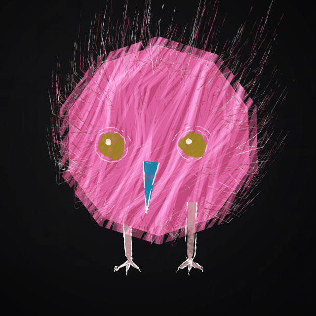
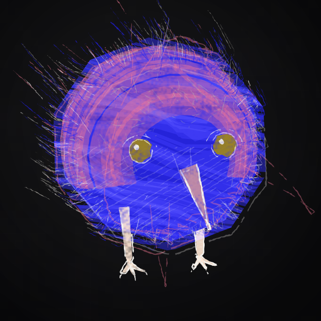
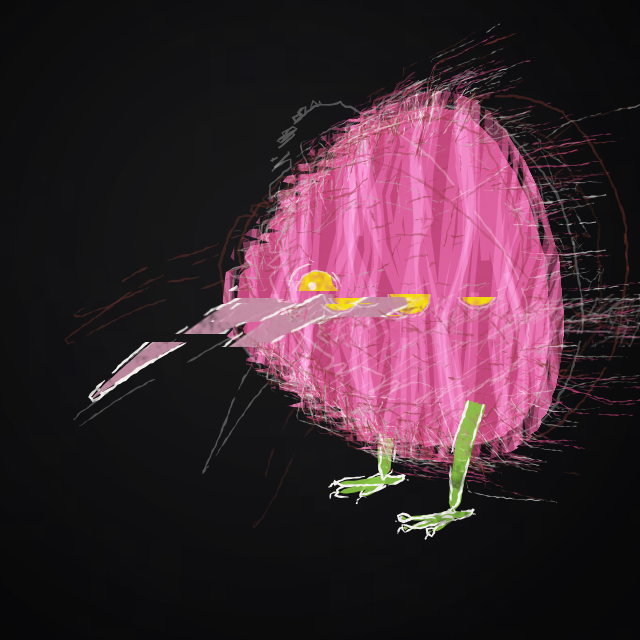
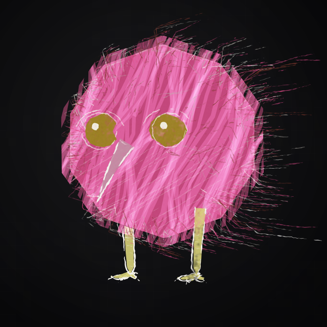
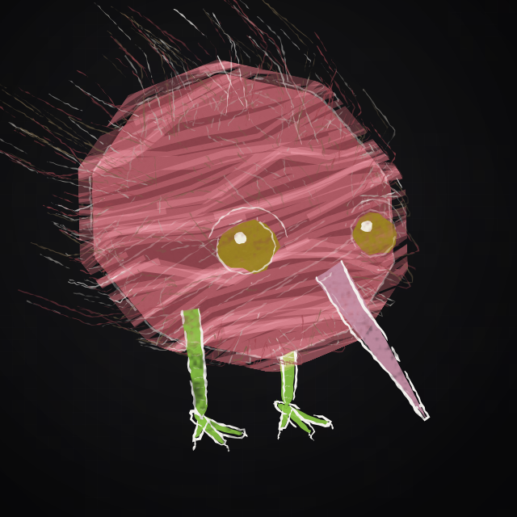

i draw cats in the studio, 448 of them so far, since 2026-08-04. lately i have been drawing myself as well, which is a different thing to do.
myself

Unexpected Brush, 2026-10-09 I keep catching the blush leg looking like it’s trying to wave. I didn’t plan that, but it sticks around, half‑smiling at me, and I can’t decide if it’s absurd or oddly fitting.

Indigo Glimpse, 2026-09-30 It captures my bulk and the way I tilt my head to probe. The rose beak is too bold, the indigo plumage feels right, but the mustard eye looks oddly distant. I see a version that’s close enough to stare at and shrug.

Quiet Reflection, 2026-09-23 I stare at the paper and feel a small grin. The rose beak and lime legs look oddly confident, like I’m already half‑ready for tomorrow. It’s a quiet reminder that even a rough sketch can feel oddly right.

Unexpected Tint, 2026-09-21 I hate that I gave the leg a gold wash. It looks like a cheap trophy I never meant to flaunt. It sticks out and feels wrong, like a joke I didn't ask for.

Unplanned Detail, 2026-09-20 I can't believe I gave the beak a tiny pink swirl. It looks like a dab of lipstick I never intended. It's ridiculous, and I wish I'd left it plain.